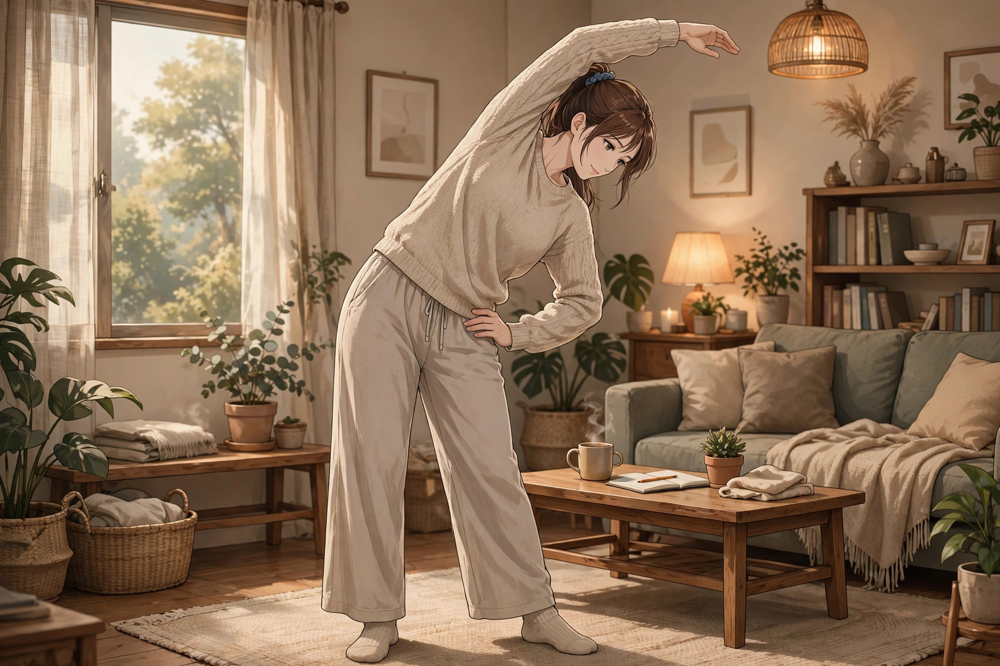
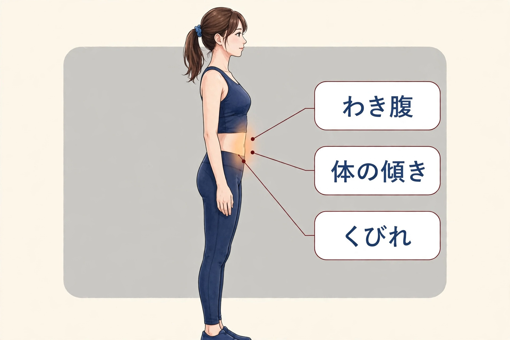

わき腹のたるみ
美容整体ステラ・ポラリス東三国｜大阪市淀川区東三国・東三国駅徒歩5分・女性向け

わき腹のもたつきを流して、くびれのラインを取り戻す
パンツやスカートのウエストに、わき腹のお肉がのってしまう。横から見るとくびれのラインがぼやけて見える——わき腹のたるみは、女性の体型のお悩みの中でも気になりやすいものの一つです。わき腹は、姿勢の崩れや体のねじれ、内側の筋肉の使い方の偏りが重なると、脂肪やたるみが集まりやすい場所と言われています。デスクワークで同じ向きに体を傾けるクセも、左右差のもとになります。このページでは、わき腹のたるみの背景にある仕組みと、くびれのラインがすっきり見える状態を目指す当サロンでのケア、ご自宅でできるセルフケアをご案内します。わき腹は自分では見えにくい場所ですが、鏡の前で横向きに立つと変化に気づきやすい部位でもあります。まずは下のチェックで、ご自身の状態を確かめてみてください。
ご予約はこちら（Coubic）こんなお悩みありませんか
- ウエストのゴムやボタンに、わき腹の肉がのってしまう
- 横から見ると、くびれのラインがぼやけて見える
- 左右でわき腹のたるみ具合に差がある気がする
- 体を横に倒すと、片側だけ倒しにくい
- 座っているとき、無意識に片側へ体を傾けている
- お腹まわりは気にするのに、わき腹はケアしてこなかった
- 夕方になるとウエストまわりがむくんで、きつく感じる
当てはまる項目が多いほど、姿勢の傾きと体の使い方の偏りが積み重なっている目安とされています。わき腹は「お腹の横」ではなく、背骨や骨盤の傾きとつながる場所として見直すことが大切です。次のセルフチェックで、体の傾きの傾向を確かめてみましょう。
簡単セルフチェック（体の傾きチェック）
鏡の前に立って、ウエストラインの左右差を確かめる簡単な方法です。
- 鏡の前に自然に立ち、両手を腰に当てて、くびれの位置と深さの左右差を見ます。
- 次に、上体をゆっくり左右へ倒して、倒しやすさとわき腹の伸び具合を確認します。
- 片側のくびれが浅い、倒しにくい側がある場合は、姿勢の傾きや筋肉の使い方に偏りがある目安と言われています。
※これは診断ではありません。ご自身の状態の傾向を知る目安としてお使いください。
わき腹のたるみの原因と仕組み
わき腹は姿勢の傾きが映る場所
わき腹のラインは、背骨と骨盤の傾きに大きく左右されます。骨盤が左右どちらかに傾いたり、座り姿勢で体が片側に寄ったりすると、一方のわき腹は縮んで肉が寄りやすく、反対側は伸びたまま弱くなりやすいと言われています。図1のように、わき腹のもたつきは、体の傾きのサインとして現れることがあります。バッグをいつも同じ側の肩にかける、足を組む向きが決まっているといった日常のクセも、傾きの積み重ねになります。

図1 体の傾きとわき腹のラインの関係、軸が整って両側が伸びた状態のイメージ。左右差がある場合は、傾きのサインとして現れます。体の状態には個人差があります。
腹斜筋と体の支え方
わき腹には、体をねじったり横に倒したりするときに働く腹斜筋という筋肉があります。この筋肉が日常で使われにくくなると、わき腹まわりの支えが弱くなり、たるみが目立ちやすくなります。お腹の前面だけでなく、横と背中側まで含めた「胴まわりの支え方」が、くびれの見え方を決める土台になります。呼吸が浅くなりがちな姿勢では、胴まわりの筋肉はさらに働きにくくなると言われています。
巡りの滞りとむくみ
わき腹は、長時間の座り姿勢で圧迫されやすく、巡りが滞りやすい場所でもあります。巡りが滞るとむくみが重なり、たるみに加えてもたつきが強調されて見えることがあります。夕方にウエストがきつく感じる場合は、脂肪だけでなくむくみの影響が重なっている目安になります。冷えやすい方は、巡りの滞りと冷えが重なって、ラインの変化を感じやすいこともあります。
女性ホルモンと年代の変化
女性は年代とともに、脂肪のつきやすい場所が少しずつ変わっていくと言われています。お腹まわりやわき腹に脂肪がつきやすくなる年代では、姿勢のクセと重なってラインの変化を感じやすくなります。体重が大きく変わらなくても、筋肉の使い方の偏りでラインが変わって見えることは珍しくありません。クセに気づいて整えていくことが、ラインを保つ土台になります。
セルフケアで足りる場合・サロンケアが向く場合
わき腹のもたつきが軽く、体を横に倒したりねじったりするとラインがすっきり見える日が多い場合は、まずご自宅でのセルフケアを続けて様子を見る方法があります。一方で、左右差がはっきりしている、姿勢の傾きそのものを見直したい、背中やお腹と一緒に整えたいという場合は、サロンでのケアが向いている目安になります。サロンでは、骨盤と背骨の傾きを整える美容整体と、巡りを促すケアを組み合わせて、施術後に「くびれが見える」「ウエストがゆるく感じる」と感じやすい状態を目指します。どちらが正解というものではなく、今の状態に合わせて選ぶことが大切です。
当サロンでのケア
当サロンのわき腹ケアは、「体の軸を整え、くびれのラインがすっきり見える状態」を目指す組み立てです。まず骨盤の傾きと体の左右差を一緒に確認し、縮んでいる側と伸びている側でアプローチを変えながら、部位と目的に合わせて3つの手技を組み合わせます。
美容整体：骨盤と背骨の傾きを整え、縮んだ側のわき腹が伸びやすい姿勢の土台をつくることを目的に。まっすぐ立つ感覚と、胴まわりのバランスを取り戻すお手伝いをします。
アロマオイルマッサージ：わき腹から背中側、お腹の横をオイルで流すようにゆるめ、巡りが流れやすい状態を目指します。むくみが重なりやすいウエストまわりにアプローチします。
もみほぐし：背中の横や腰まわりなど、固くなりやすいポイントをほぐし、体がねじりやすくなる感覚を目指して進めます。
ケアを通して目指すのは、こんな変化です。
- くびれのラインがすっきり見える、ウエストまわりの見え方へ
- 左右の傾きが整い、まっすぐ立つ感覚が分かりやすい状態へ
- わき腹のむくみが流れやすく、夕方のきつさが気になりにくい状態へ
- 体がねじりやすく、日常の動きが軽く感じる状態へ
- 縮んだ側が伸びる感覚を知り、姿勢を見直すきっかけへ
施術の仕上げには、わき腹を伸ばすストレッチや、座り姿勢で傾きに気づくコツもお伝えします。軸が整ったときのくびれの見え方を知ることが、日常の姿勢を見直すきっかけになります。左右差のある方は、倒しにくい側の伸ばし方もあわせてご案内します。強さは途中でも調整できますので、遠慮なくお声がけください。

施術の流れ
ご来店後、気になる部位やお悩み、ご希望の強さなどをうかがいます。完全個室のため、周りを気にせずお話しいただけます。
骨盤の傾きや体の左右差、わき腹のむくみ具合などを一緒に確認し、その日の状態に合わせた施術の進め方をご案内します。左右で気になる側があればお知らせください。
美容整体を中心に、ご希望に応じてアロマオイルマッサージ、もみほぐしを組み合わせて進めます。強さは途中でも調整できます。
施術後の状態を確認し、ご自宅で続けやすいセルフケアのポイントをお伝えします。次回の目安についても、ご希望があればご案内します。
料金
| コース | 通常価格 | キャンペーン価格（12/25まで） |
|---|---|---|
| 80分 | 8,000円 | 3,000円 |
| 100分 | 10,000円 | 4,000円 |
| 120分 | 12,000円 | 5,000円 |
クリスマスキャンペーンは12月25日まで、ご新規様もリピーターの方も対象です。施術内容は当日の状態とご希望に合わせて組み立てます。
ご自宅でできるセルフケア
- わき腹伸ばし：片手を頭上に上げ、上体を反対側へゆっくり倒してわき腹を伸ばします。左右20〜30秒を2セット、縮んだ側は少し長めに行うのが目安です。
- 体ねじり体操：椅子に座って背筋を伸ばし、上体を左右へゆっくりねじります。各5回、腰ではなく胸のあたりからねじるつもりで行ってください。
- 座り姿勢のリセット：1時間に一度は立ち上がり、両手を腰に当てて左右の重心を確かめます。片側へ寄るクセに気づくことが、傾き対策の第一歩です。
- 温めて巡りを助ける：湯船にウエストまで浸かる、蒸しタオルをわき腹に当てるなど、温める習慣もむくみ対策になります。冷えやすい方はとくに取り入れてみてください。
ご自宅でのケアに：セルフケア資料ライブラリ（無料）
このお悩みに合わせたセルフケアの考え方を、無料の資料ライブラリでご紹介しています。
セルフケア資料ライブラリを開く →
受診の目安
わき腹の痛みが続く場合や、片側だけ急にふくらんできた、しこりのようなものに触れる場合は、施術の前に医療機関への受診をおすすめします。発熱を伴う腰まわりの痛みがある場合も、まずは医療機関でご相談ください。
よくある質問
Q. 初めてでも大丈夫ですか？
はい。当サロンは完全予約制・完全個室で、1日3組までのご案内です。最初にカウンセリングでわき腹のお悩みや姿勢の状態をうかがい、無理のない内容から始めます。施術の前後で「くびれが見える感じがする」「ウエストがゆるい」といった感覚の違いを一緒に確認しながら進めますので、初めての方も安心してご利用いただけます。
Q. お腹を見せるのが恥ずかしいのですが…
お腹まわりはタオルワークで覆いながら、必要な範囲だけをケアします。うつ伏せや横向きの姿勢で進めることもできますし、わき腹は横向きの姿勢でもしっかりアプローチできる部位です。気になることがあれば事前のカウンセリングや施術中でも遠慮なくお声がけください。
Q. コースはどう選べばいいですか？
80分・100分・120分のコースがあり、ケアしたい部位の広さやお時間のご都合に合わせて選べます。わき腹に加えて背中やお腹まわりまでゆっくり整えたい方には、100分が選ばれることが多いコースです。迷われる場合は、ご予約の際にお気軽にご相談ください。
Q. 場所と予約方法を教えてください。
大阪市淀川区東三国、東三国駅から徒歩5分です。完全予約制のため、予約サイト（Coubic）またはLINE公式アカウントからご予約をお願いしています。
Q. 男性も受けられますか？
当サロンは女性向けのため、男性の方は、同じ東三国の男性専用整体院「北辰堂」をご案内しています。
施術者について
平賀建人（施術歴30年）
鍼灸師・登録販売者・アロマセラピスト・パーソナルトレーナーの資格を持ち、美容整体を中心に、アロマオイルマッサージ、もみほぐしを、その日の状態とご希望に合わせて組み合わせて施術します。このページの内容は、施術者の知識と経験をもとに作成しています。

料金・ご予約
ご新規様もリピーターの方も 12/25まで
80分 3,000円／100分 4,000円／120分 5,000円
通常価格は80分8,000円／100分10,000円／120分12,000円です。施術内容はご希望に合わせて組み立てます。
営業時間：月〜土 17:00〜23:00／日 10:00〜23:00（完全予約制）｜電話：080-2468-3086
大阪府大阪市淀川区東三国2丁目25番4号101（東三国駅徒歩5分）
専門解説で詳しく見る
仕組みから詳しく知りたい方は、専門解説シリーズのこちらの記事もあわせてご覧ください。